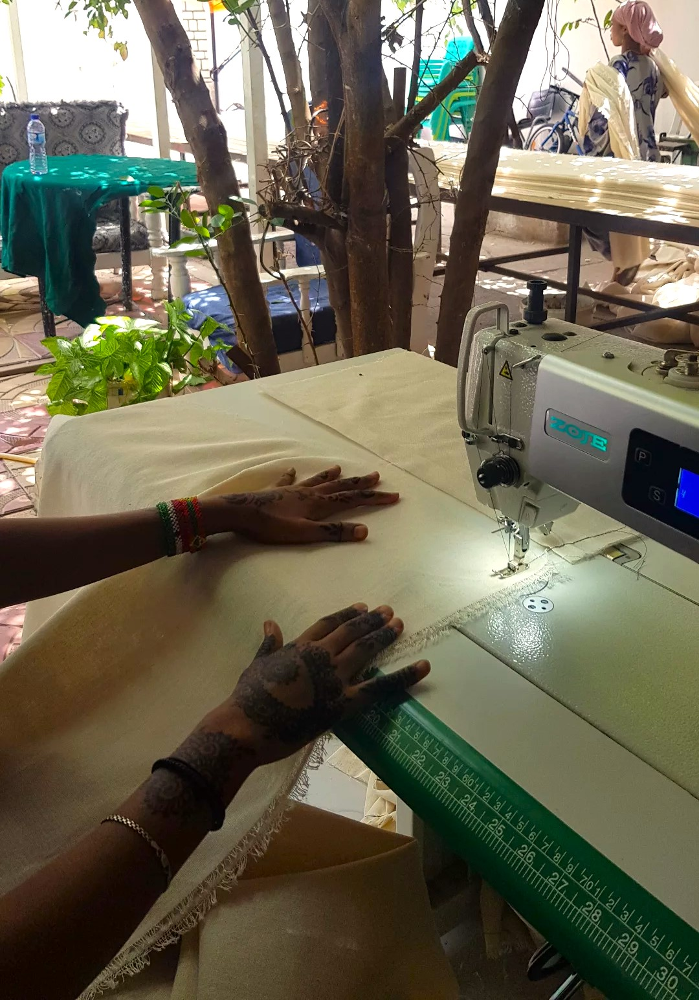

Dr. Monica Beeder’s research lies in development economics, conflict economics, and the economics of crime, with additional interests in political economy, behavioral economics, and experimental economics. Her work examines how illicit markets, ethnicity, discrimination, violence, exploitation, and state interventions shape social and economic outcomes. She is also actively engaged in research on reproducibility and replication in quantitative social science.
Publications
Comparing Human-Only, AI-Assisted, and AI-Led Teams on Assessing Research Reproducibility in Quantitative Social Science
With Abel Brodeur et al.
Accepted in PNAS, 2026
Mass Reproducibility and Replicability: A New Hope
With Abel Brodeur et al.
Accepted in Nature, 2026
Effects of Jobs on Ethnic Switching: Evidence from a Field Experiment in Ethiopia
With Lovise Aalen,
Andreas Kotsadam, and
Espen Villanger
Journal of Development Studies, 2025
This paper studies whether formal employment can induce ethnic switching in Ethiopia. Working with 27 firms across five regions, the project randomized job offers to women and followed them over time. The findings show that formal employment substantially increases ethnic switching, suggesting that employment can reshape identity when it reduces dependence on land-based and ethnic networks. Qualitative evidence indicates that instrumental considerations, including fear during work commutes, are an important mechanism.
Working Papers
Throwing Gasoline on the Cocaine Production: The Effect of a Supply Shock on Violence
Job Market Paper
This paper examines whether lower input costs in cocaine production increase violence in Colombia. It exploits an exogenous supply shock in smuggled gasoline from Venezuela, an important input in cocaine production, and uses a difference-in-differences framework comparing areas with different exposure to the shock. The findings show that the shock increased coca cultivation and raised homicides by between 22 and 31 per 100,000 inhabitants, corresponding to roughly a 40 to 50 percent increase in the homicide rate. The paper highlights how price changes in one illegal market can spill over into another and intensify violence.
Photo of coca leaves by researcher
Interpersonal and Ethnic Bias in Ethiopia
Revise and Resubmit, Journal of Development Studies
This project studies how women and their partners in Ethiopia discriminate on the basis of ethnicity. Using two randomized vignette experiments conducted with 1,200 women and their husbands or partners across five regions, the paper examines ethnic bias toward both politicians and ordinary villagers. The results show substantial ethnic bias against politicians from other ethnic groups. By contrast, the women do not display ethnic bias against a local villager, whereas their partners do. The paper contributes to the literature by showing that ethnic discrimination varies by context and that men may discriminate more strongly than women even within the same household.

Photo of Ethiopian workers by researcher
Replication Report: Checking and Sharing Alt-Facts
With Erik Ø. Sørensen
I4R Discussion Paper Series 34, The Institute for Replication (I4R)
Read the report
Work in Progress
Military Drones and Radicalization in an African Context
This paper studies whether drone strikes affect civilian attitudes toward public and traditional institutions. Combining geocoded Afrobarometer data with the Armed Conflict Location & Event Data Project (ACLED), it uses a quasi-experimental regression discontinuity design to compare respondents living close to attacks before and after bombing events. The preliminary evidence suggests that strikes can reduce trust and alter perceived threat from terror organizations, although the analysis remains constrained by limited data near attacks in both space and time.
Exploitation of Young Immigrant Workers
Joint with Julia Teufel, Max Planck Institute for the Study of Crime, Security and Law.
Justification of Exploitation
Joint with Hannes Rusch and Julia Teufel, Max Planck Institute for the Study of Crime, Security and Law.
Exploitation of Workers
Joint with Hannes Rusch, Lennart Reddmann, Till Vater, and Thomas Meissner.
Research Themes
Across her projects, Dr. Beeder studies four broad themes: illicit markets and violence; ethnicity and discrimination; conflict, insecurity, and civilian attitudes; and reproducibility in social science. Her research combines causal inference, survey experiments, field experiments, and geocoded conflict data to address questions at the intersection of economics, conflict, and development.